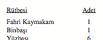
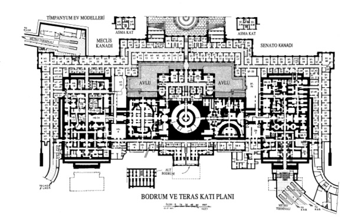

32. BÖLÜM
Langdon ile Sato’ya, Kongre Binası’nın doğudaki temel duvarı boyunca uzanan sonsuz koridorda rehberlik eden Anderson, “Neredeyse geldik,” dedi. “Lincoln’ın zamanında bu geçidin pis bir zemini vardı ve fare kaynıyordu.”
Langdon zeminin karo kaplanmasına minnet duydu; farelere hayranlık duyduğu söylenemezdi. Ayak sesleri uzun geçitte ürkütücü ve ahenksiz bir şekilde yankılanan grup yürümeye devam etti. Uzun koridorda bazıları kapalı ama çoğu aralık duran kapılar sıralanmıştı. Bu kattaki odaların çoğunluğu terk edilmiş gibi görünüyordu. Langdon kapılardaki sayıların giderek küçüldüğünü fark etti.
SB4... SB3... SB2... SB1...
Numaralandırılmamış bir kapının yanından geçtiler, ama sayılar yeniden küçülmeye başladığında Anderson aniden durdu.
HB1... HB2...
Anderson, “Üzgünüm,” dedi. “Kaçırdım. Bu kadar aşağıya hemen hemen hiç inmiyorum.”
Grup eski bir metal kapıya doğru birkaç metre geri gitti. Langdon, bu kapının koridorun tam ortasında bulunduğunu fark etti. Senato Bodrumu’yla Temsilciler Meclisi Bodrumu’nu ikiye ayırıyordu. Sonradan anlaşıldı ki kapı aslında numaralandırılmıştı, ama o kadar silikti ki okunmuyordu.

Anderson, “İşte geldik,” dedi. “Anahtarlar birazdan gelir.”
Sato kaşlarını çatıp saatine baktı.
SBB yazısına bakan Langdon, Anderson’a, “Burası ortada olduğu halde neden Senato tarafında kabul edilmiş?” diye sordu.
Anderson şaşırmıştı. “Ne demek istiyorsunuz?”
“SBB yazıyor, S ile başlıyor H ile değil.”
Anderson başını iki yana salladı. “SBB’deki S harfi Senato anlamına gelmiyor. O...”
“Şef?” Bir memur uzaktan sesleniyordu. Elinde anahtarla koridorda onlara doğru koşmaktaydı. “Üzgünüm efendim, biraz zaman aldı. SBB’nin anahtarını bulamadık. Bu yedek kutusundaki anahtar.”
Anderson şaşkınlıkla, “Aslı kayıp mı?” diye sordu.
Yanlarına geldiğinde nefes nefese kalan memur, “Galiba kayıp,” diye yanıtladı. “Yıllardır buraya kimse inmek istemedi.”
Anderson anahtarı eline aldı. “SBB13’ün başka anahtarı yok mu?”
“Üzgünüm, SBB’deki odalardan hiçbirinin anahtarını bulamadık. MacDonald şu anda bunun üzerinde çalışıyor.” Görevli, telsizini çıkarıp konuştu. “Bob? Şefin yanındayım. SBB13’ün anahtarıyla ilgili yeni bir bilgi var mı?”
Görevlinin telsizi cızırdadı ve bir ses cevap verdi. “Aslında, evet. Bu biraz tuhaf. Bilgisayara geçtiğimizden bu yana hiç kimsenin oraya girmediğini görüyorum, ama defterdeki kayıtlarda SBB’deki odaların yirmi yıl önce temizlenip boşaltıldığı yazıyor. Şu anda kullanılmayan alan olarak listeleniyorlar.” Durdu. “SBB13 hariç hepsi.”
Anderson telsizi aldı. “Ben şef. SBB13 hariç hepsi derken ne demek istedin?”
“Şey, efendim,” diye cevap verdi görevli. “Burada SBB13’ün ‘özel’ olduğunu gösteren elyazısı bir not var. Uzun zaman öncesine ait ama Mimar tarafından paraşanmış.”
Langdon, Mimar kelimesinin, Kongre Binası’nı inşa eden kişiye değil, onu yöneten kişiye atfedildiğini biliyordu. Kongre Binası’nın Mimarı olarak atanan kişi, tıpkı bir binanın müdürü gibi onun bakımından, restorasyonundan, güvenliğinden, personel alımından ve ofislerin belirlenmesinden sorumluydu.
Telsizdeki ses, “Tuhaf olan şu ki...” dedi. “Mimar’ın notu bu özel yerin Peter Solomon’a tahsis edildiğini söylüyor.”
Langdon, Sato ve Anderson birbirlerine şaşkınlıkla baktılar.
Ses, “Efendim, sanırım Bay Solomon, SBB’nin asıl anahtarıyla birlikte SBB13’ün anahtarını da elinde bulunduruyor,” diye devam etti.
Langdon kulaklarına inanamıyordu. Peter’ın Kongre Binası bodrumunda özel bir odası mı var? Peter Solomon’ın sırlarla dolu olduğunu biliyordu ama bu kadarı Langdon için bile şaşkınlık vericiydi.
Bundan pek hoşlanmadığı anlaşılan Anderson, “Tamam,” dedi. “Özellikle SBB13’e girmeyi umut ediyoruz, bu yüzden yedek anahtarı aramaya devam edin.”
“Arayacağız efendim. Bununla birlikte istemiş olduğunuz dijital resim üzerinde de çalışıyoruz...”
Konuşma düğmesine basıp, sesini kesen Anderson, “Teşekkürler,” dedi. “Bu kadar. Elinize geçer geçmez o dosyayı Başkan Sato’nun BlackBerry’sine gönderin.”
“Anlaşıldı efendim.” Telsizin sesi kesildi.
Anderson telsizi karşılarında duran memura verdi.
Görevli bir planın fotokopisini çıkarıp şefe uzattı. “Efendim, SBB gri gösterilen yer, SBB13’ü X ile işaretledik. Bu şekilde bulmak kolay olacak. Oldukça küçük bir yer.”
Anderson memura teşekkür ettikten sonra, genç adam uzaklaşırken dikkatini elindeki plana verdi. Olayları izlemekte olan Langdon, Kongre Binası’nın altındaki tuhaf labirenti meydana getiren odacıkların sayısına şaşırmıştı.
Bir süre planı inceleyen Anderson, başını sallayıp kâğıdı cebine soktu. SBB yazan kapıya dönüp anahtarı yukarı kaldırdı, ama açmaktan rahatsızlık duyduğu anlaşılıyordu. Langdon da benzer kuşkular içindeydi; bu kapının ardında ne olduğunu bilmiyordu ama Solomon orada her ne saklıyorsa, gizli kalmasını istediğinden emindi. Hem de çok gizli.
Sato boğazını temizleyince Anderson ne demek istediğini anladı. Şef derin bir nefes alıp anahtarı deliğe soktu ve çevirmeye çalıştı. Anahtar kıpırdamadı. Langdon bir an için yanlış anahtar olduğu ümidine kapıldı, ama ikinci denemede anahtar döndü ve kilit açıldı. Anderson kapıyı iterek araladı.
Ağır kapı dışarı doğru gıcırdayarak açılırken, koridora rutubetli bir hava doldu.
Eliyle ışık düğmesini ararken Langdon’a bakan Anderson, “Profesör,” dedi. “Sorunuzun cevabına gelince, SBB’deki S harfi Senato demek değil. Alt40 demek.”
“Alt mı?” diye soran Langdon’ın aklı karışmıştı.
Başını sallayan Anderson, kapının iç tarafındaki ışık düğmesini bulmuştu. Tek bir lamba, zifiri karanlığa doğru inen dimdik merdivenleri aydınlattı. “SBB, Kongre Binası’nın alt bodrumu demektir.”

40 İngilizcede “Sub” olarak kullanılır.